Sanitario
Vodder
Linfodrenaggio manuale terapeutico per ritenzione patologica e gonfiori cronici.
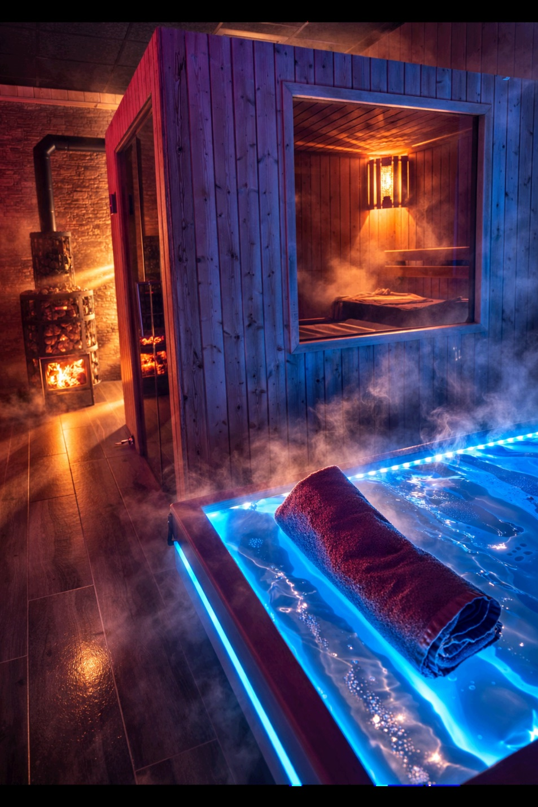
Catalogo 2026 · Studio 1 & 2
Mente, corpo, anima. Non è solo un massaggio: è un percorso costruito sul tuo corpo e misurato nei suoi cambiamenti.
Sant'Agostino di Albignasego · Padova
Drenami
Drenaggio sanitario, estetico e modellante
I trattamenti drenanti e modellanti sono la specializzazione dello studio. Tre metodi certificati, uno sanitario e due estetici, calibrati sulla persona con l'analisi InBody 770.
Tutti e tre i metodi sotto lo stesso tetto · InBody 770 inclusa
Sanitario
Linfodrenaggio manuale terapeutico per ritenzione patologica e gonfiori cronici.
Estetico
Drenaggio brasiliano ad alta intensità, con risultati visibili già nella singola seduta.
Modellante
Lavoro profondo su addome e silhouette: linfomodellante e liposcultore.
Quale metodo è giusto per te? Non lo decidiamo a sensazione. L'InBody 770 misura acqua intra ed extracellulare, distribuzione segmentale e ritenzione localizzata: sono i numeri a dire dove intervenire e con quale tecnica.
InBody 770
L'InBody 770 misura quello che a occhio non si vede: massa magra, massa grassa, acqua intra ed extracellulare, distribuzione segmentale, ritenzione localizzata, equilibrio tra destra e sinistra.
Misuriamo prima di iniziare e dopo ogni ciclo. Vedi nero su bianco quanto stai cambiando, seduta dopo seduta. Non devi crederci: lo vedi.
In molti casi misuriamo prima e dopo la stessa seduta: la perdita di liquidi extracellulari di un drenante in biosauna si misura in tempo reale.
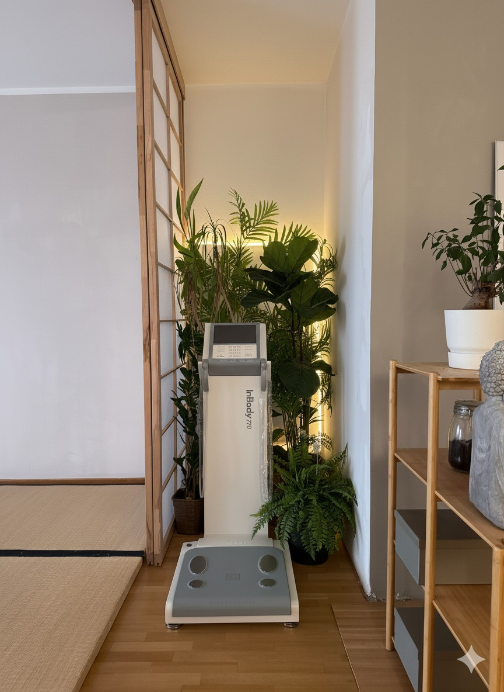
Sala Biosauna
Calore avvolgente · vasodilatazione · drenaggio amplificato
Il trattamento si esegue a 30 gradi con bassa umidità: il calore è confortevole, mai opprimente, e la leggera vasodilatazione favorisce il movimento dei liquidi durante il massaggio.
Per chi vuole spingersi oltre, la temperatura sale fino a 43 gradi: la sudorazione aggiunge una perdita di liquidi che l'InBody misura prima e dopo il trattamento.
La sala biosauna →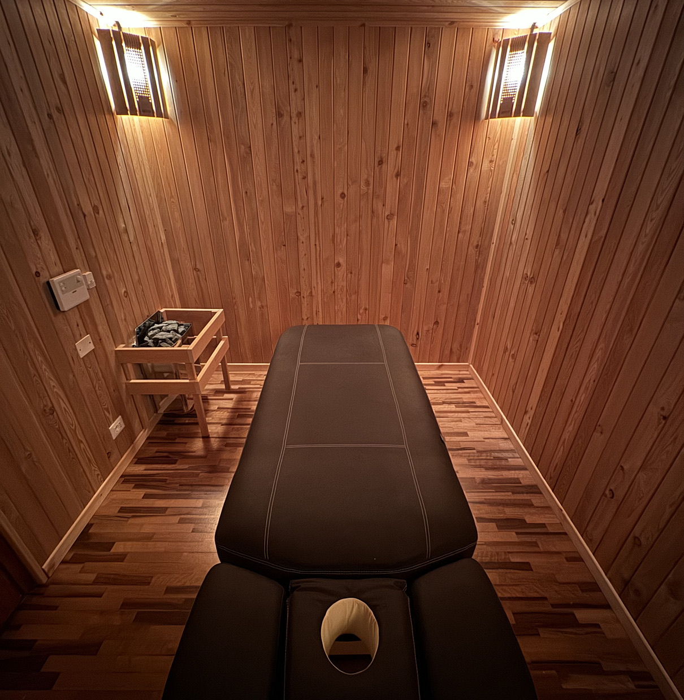
Sala Emozionale
Sale rosa caldo · cielo stellato · lettino LEMI Aemotion
La sala emozionale unisce l'esperienza maturata a New York con le neuroscienze applicate al corpo e le tecniche di rilassamento profondo.
Il lettino LEMI Aemotion poggia su sale rosa caldo e si inclina come i letti ospedalieri: rispetto a un lettino classico, il drenaggio è aiutato due volte, dal calore minerale e dalla posizione anti-gravitaria.
Aromi, atmosfera, sound design e ritmo del massaggio che segue la musica: ogni elemento è calibrato sull'obiettivo della seduta.
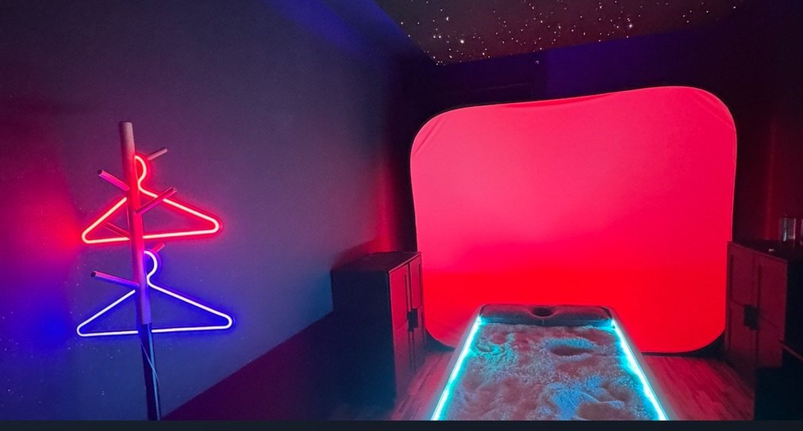
Sala Asiatica
Su futon originale giapponese, su tatami
La sala asiatica accoglie il massaggio thai tradizionale, eseguito a terra sul futon, con allungamenti e pressioni lungo le linee energetiche del corpo.
Formula mista: 30 minuti di thai e 30 di Detensionami, per assaggiare entrambe le tradizioni in un'unica seduta da 60 minuti.
La sala asiatica →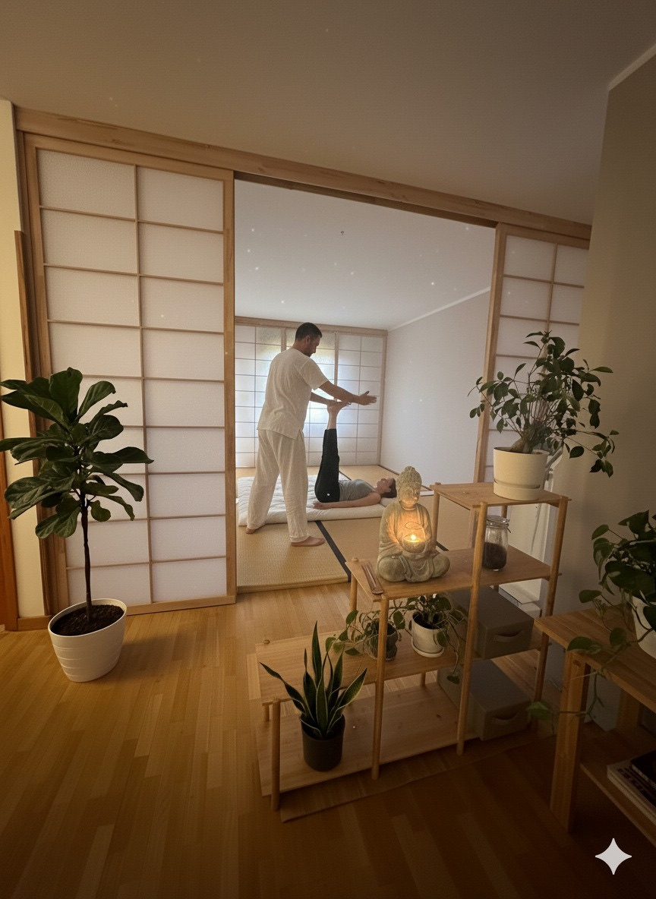
Sala massofisioterapica
Massaggi terapeutici, decontratturanti e sportivi su Manuthera 242
Il Manuthera 242 è un tavolo professionale che si inclina, si curva e si articola per accompagnare il corpo in posizioni che rendono più efficace il lavoro manuale massofisioterapico: decontratturanti profondi, lavoro posturale, mobilizzazioni segmentali e lavoro miofasciale con strumenti di precisione.
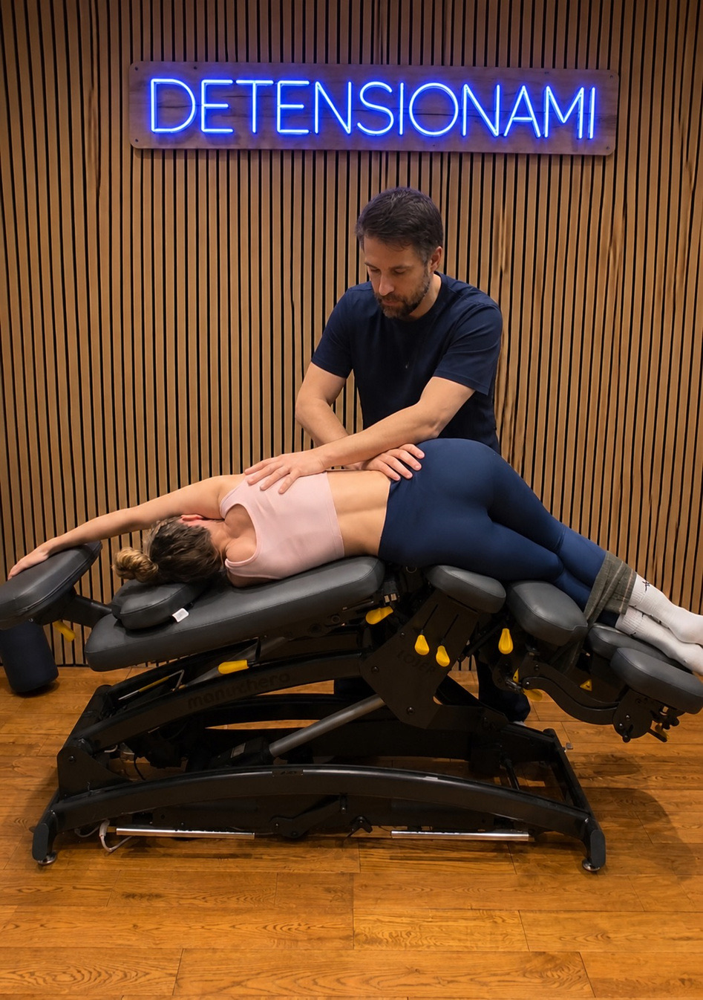
Tensioni e contratture
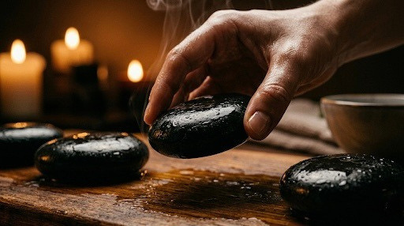
Il metodo originale · 60 · 90 · 120 minuti
Dieci anni di tecniche apprese tra Londra e New York. Mano leggera o profonda a seconda di quello che ti serve: lavora su contratture, stress, ansia e drenaggio. Nessun massaggio è uguale al precedente: cambiano musica, ritmo e intensità.
40 minuti · sportivo decontratturante
Massaggio sportivo con percussori muscolari di precisione. Per chi fa sport ad alto carico o ha contratture localizzate profonde.
A valutazione
Lavoro massofisioterapico su tavolo professionale regolabile su più assi, per il trattamento posturale e segmentale. Cervicale, lombare, articolazioni.
A richiesta · integrabili
Coppettazione, maderoterapia e hot stones si inseriscono nei trattamenti su valutazione, per rafforzare l'azione decontratturante o drenante.
L'approccio integrato
Competenze psicologiche applicate al lavoro corporeo
Il corpo non mente. Le tensioni croniche, il bruxismo, i tic nervosi, il respiro bloccato sono il modo in cui la mente parla attraverso i muscoli quando le parole non bastano. In ogni seduta porto gli strumenti della mia formazione psicologica.
Riconoscere dove e perché il corpo trattiene. Il lavoro manuale segue questa lettura, non un protocollo standard.
Benda e cuffie insonorizzate amplificano la percezione tattile e spengono il rumore mentale.
I tic muscolari involontari rispondono a protocolli di rilassamento profondo che uniscono respiro, deprivazione sensoriale e lavoro corporeo lento.
Dove si accumula lo stress nel corpo, perché resta lì, e come luce, suono e temperatura possono cambiare la risposta del sistema nervoso.
Lo speciale
Massaggio in deprivazione sensoriale · 120 minuti
Bendati e con le cuffie insonorizzate, il cervello amplifica moltissimo la percezione del tatto. È una tecnica che ho appreso a New York e che si usa nei protocolli di rilassamento profondo.
L'esperienza è completa: aromi, atmosfera, sound design e massaggio a ritmo variabile, sincronizzato con la musica.
Una seduta che non si dimentica.
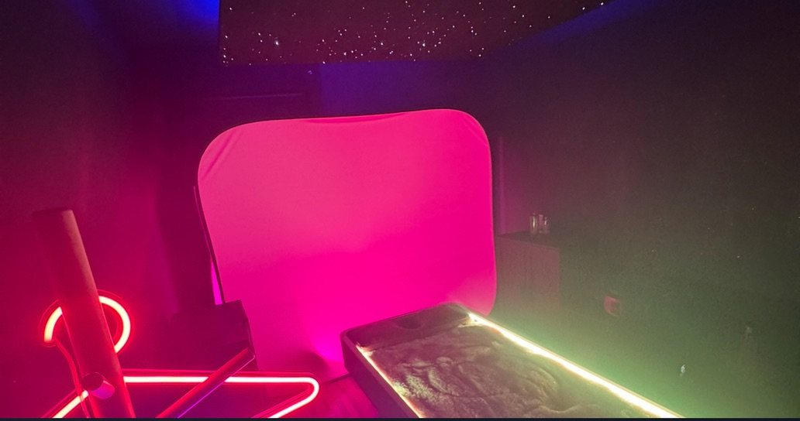
Studio 2 · Novità 2026
Percorsi da 2 a 3 ore e mezza · gruppi da 2 a 4 persone
Il circuito completo, in quattro tappe.
Da 5 a 20 minuti di nuoto controcorrente, quanto vuoi tu.
Calore intenso davanti al camino, per una sudorazione profonda.
Immersione fredda, con temperatura personalizzabile.
Massaggio a calore controllato: aiuta vasodilatazione e ritorno venoso.
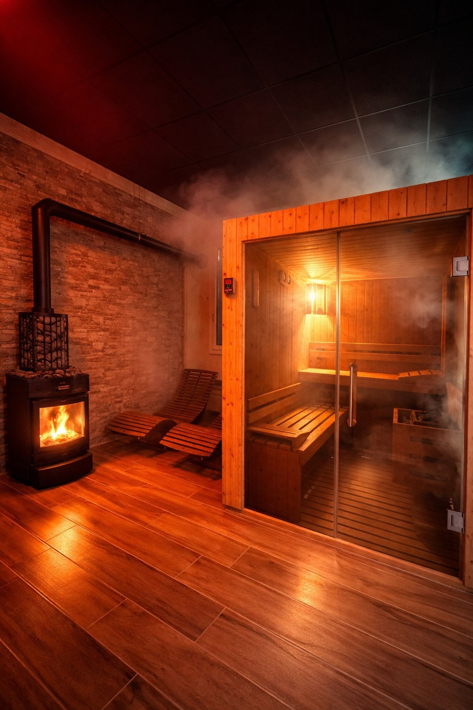
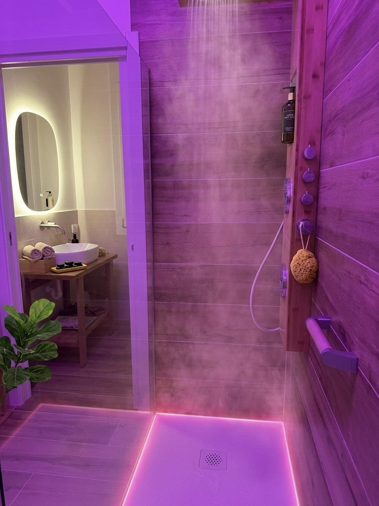
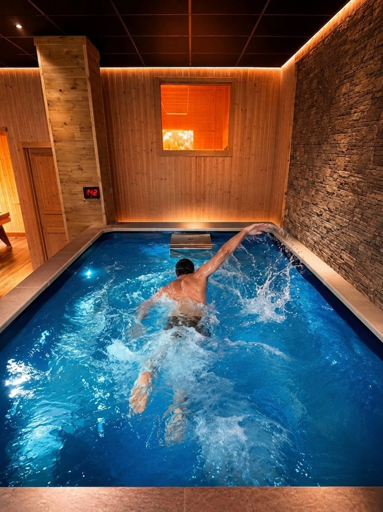
Per chi vuole il top
L'acqua fa quello che le mani da sole non possono fare: avvolge, sostiene, comprime in modo uniforme. Bastano 10-15 minuti di nuotata controcorrente per accendere la circolazione linfatica e venosa, sciogliere i ristagni nei tessuti più pesanti e riattivare il dialogo tra liquidi e muscoli che la sedentarietà interrompe.
Quando arrivi al lettino il corpo è già pronto: il drenante Renata França, subito dopo, trova un sistema aperto e può lavorare in profondità invece di dover sbloccare la superficie. Per questo l'abbinamento funziona meglio della sola tecnica manuale.
A piacere il rituale si chiude con sauna e immersione a 10 gradi: l'alternanza di caldo e freddo completa il ciclo vascolare e rafforza l'effetto detensionante e anti-edema.
L'Endless Pool →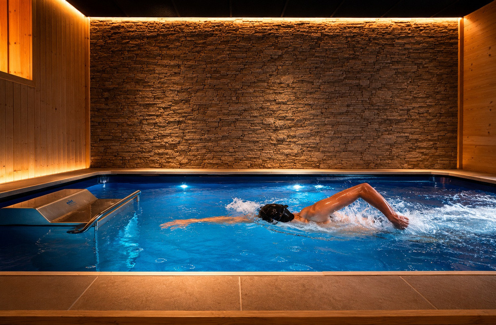
Studio 2 · Sauna davanti al camino
Con camino a legna a vista
La sauna originale finlandese Harvia è davanti a un camino a legna: due fonti di calore vere, due tonalità di luce, un'atmosfera che trasforma il calore in un rito.
Il protocollo completo alterna sauna e vasca fredda: il contrasto termico stimola la circolazione, la risposta antinfiammatoria e la regolazione del sistema nervoso autonomo.
Cura del dettaglio. Doccia con luce colorata regolabile, prodotti professionali, asciugamani in puro cotone. Ogni passaggio del circuito è pensato perché tu non debba pensare a nulla.
La sauna →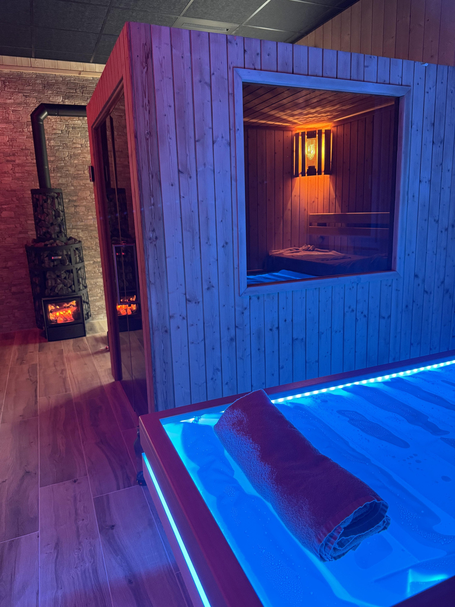
Eventi speciali
Shala yoga · sala cinema Dolby Atmos
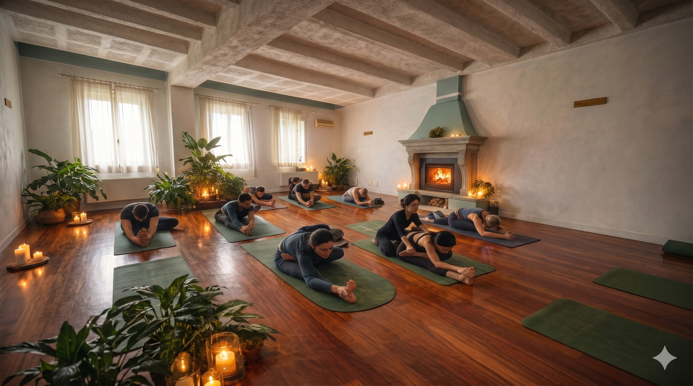
60 minuti · nella shala yoga
Massaggio davanti al camino con musica classica suonata dal vivo: la musicoterapia incontra il massaggio terapeutico.
La sala →Sala cinema · 14 casse + 4 sub · Dolby Atmos
Il corpo viene massaggiato seguendo frequenze musicali che agiscono sul sistema nervoso autonomo. Solo su appuntamento dedicato.
La sala →60 o 90 minuti
Su prenotazione, per chi è già stato in studio almeno una volta, da 55 €. Ideale per i gruppi di quattro: a rotazione uno riceve il massaggio, due si godono la SPA e il quarto fa la lezione.
Sedute singole
Per chi vuole provare prima di iniziare un percorso · Drenami · Tensioni · Esperienze
Sconto di 10 € se saldi con PayPal al momento della prenotazione (account nutrylab@gmail.com). Vale anche per i regali acquistati in anticipo.
Annullamenti. Spostamento gratuito fino a 12 ore prima. Annullamento a meno di 12 ore: rimborso del 50% della seduta. Mancata presentazione: l'acconto non viene rimborsato.
Conferma della prenotazione. Per riservare lo slot serve un acconto di 35 € con PayPal (account nutrylab@gmail.com), scalato dal totale a fine seduta.
Annullamenti. Spostamento gratuito fino a 12 ore prima. Mancata presentazione: l'acconto non viene rimborsato.
Percorsi personalizzati
Il valore di un percorso rispetto alla singola seduta
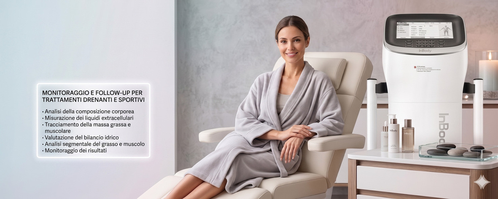
Una singola seduta dà sollievo. Un percorso costruisce un cambiamento. Con l'InBody all'inizio e alla fine vedi i progressi nei numeri: non devi fidarti delle sensazioni.
5 sedute da 60 minuti
Analisi InBody 770 iniziale, cinque trattamenti calibrati sui risultati e distribuiti tra le sale dello studio, InBody finale con il report dei progressi.
400 € 380 €
10 sedute da 60 minuti
InBody iniziale e finale, dieci sedute di drenaggio nei tre metodi (Vodder, Renata França, Manuela Shala), con l'opzione del massaggio in biosauna per amplificare l'effetto.
800 € 700 €
Programma sperimentale 2026-2027 · 10 posti
Dodici sedute da due ore, una al mese, nello Studio 2: nuoto in Endless Pool, protocollo sauna finlandese, massaggio linfodrenante. InBody a inizio e fine percorso nello Studio 1.
1.800 € 1.500 €
Annuale · 52 sedute · 3 posti rimanenti
Un massaggio a settimana per un anno, 60 minuti, di qualsiasi tipo. Slot fisso riservato, programmazione e monitoraggio dell'intero percorso. Una costanza premiata con 1.000 € di risparmio.
4.160 € 3.160 €
Disponibilità aggiornata: scrivimi su WhatsApp.
Chiedi su WhatsApp →Chi sono
Massofisioterapista · laureato in scienze psicologiche · autore
Ho cominciato con il massaggio a vent'anni e ho passato i dieci anni successivi tra Londra e New York, dove ho studiato e praticato discipline diverse: dal massaggio terapeutico al lavoro emozionale in deprivazione sensoriale.
Sono rientrato a Padova nel 2020 con un approccio integrato, in cui il corpo non viene mai trattato separato dalla mente. Ho costruito Detensionami come uno spazio in cui ogni stanza ha uno scopo preciso e ogni trattamento si personalizza su dati oggettivi.
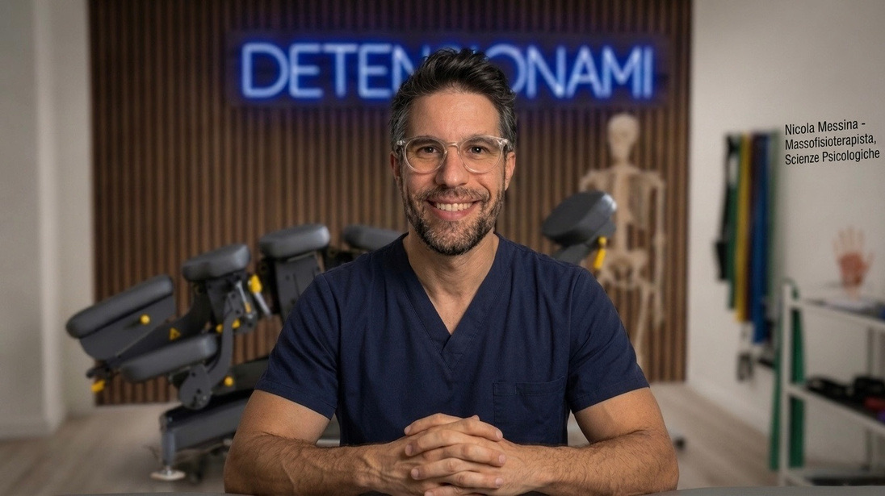
Pubblicazioni
Ogni libro approfondisce un aspetto del lavoro che faccio in studio: per chi vuole capire di più e continuare a casa il percorso iniziato qui.
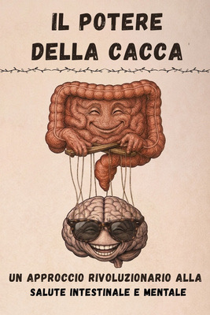
Cos'è la psicobiotica: psicologia e nutrizione si incrociano su oltre 360 fonti bibliografiche.
Uscito il 1° maggio 2026 · su Amazon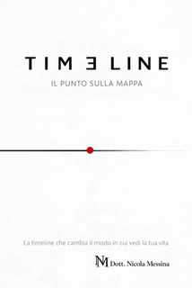
Dove sei adesso e dove stai andando: tecniche psicologiche per sviluppare consapevolezza. In co-scrittura con il dottor Franco Berrino.
In arrivo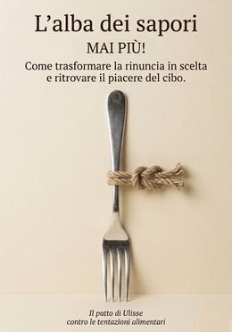
Trasformare la rinuncia in scelta e ritrovare il piacere del cibo: una guida contro le tentazioni alimentari.
Prossimamente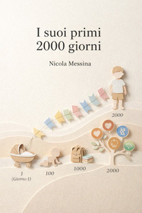
Neurosviluppo, attaccamento e microbiota nei primi cinque anni: la finestra che plasma l'adulto di domani.
Prossimamente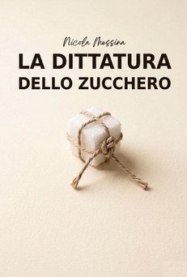
Come lo zucchero governa appetito, umore e abitudini, e come riprendersi il comando.
Prossimamente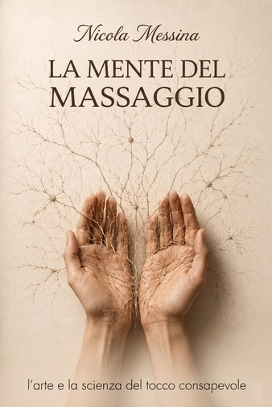
L'arte e la scienza del tocco consapevole.
ProssimamenteLa scienza della novità per allungare la vita e proteggere chi amiamo.
ProssimamenteMeditazione, nervo vago e asse intestino-cervello: dove la tradizione contemplativa incontra la neurogastroenterologia.
ProssimamenteVivere con l'ADHD: riconoscerlo, conviverci e trasformare la neurodivergenza in una risorsa quotidiana.
ProssimamenteNeuroscienze, attaccamento e mondo digitale: la cassetta degli attrezzi per chi educa nel ventunesimo secolo.
ProssimamenteStoria di una bambina che capisce prima di poterlo dire.
ProssimamenteDetensionami
Non è solo un massaggio. È un percorso costruito sul tuo corpo, misurato nei suoi cambiamenti.
Catalogo Detensionami 2026 · www.detensionami.it